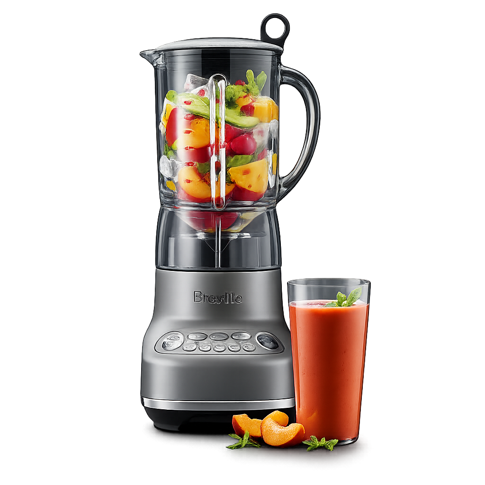

Stop researching. Get the right answer for your situation.
If you want the best blender for smoothies, frozen fruit, and everyday kitchen use without paying Vitamix-level prices, the Breville Fresh & Furious BBL620 is the clearest default pick for most people.

Best for most kitchens that want smooth daily blending without paying for heavy-duty power they will not use.
Decision Snapshot
Why it wins: fewer durability complaints than most mid-range blenders people actually cross-shop.
Want the shortest path?
Compare the obvious alternatives →See where Vitamix, Ninja, and NutriBullet still fall short for most buyers.
Why this decision holds up
Not the right fit if you make very thick blends, nut butters, or blend hard ingredients several times a day.
Already leaning toward it?
Check current pricing now — this is the point where most people already know whether the BBL620 fits their situation.
Check the priceAffiliate link. Disclosure
Most blender shoppers are really trying to answer a small handful of questions. This page is built to resolve those quickly, then give you one default pick that holds up in real ownership.
This is the core use case for most buyers, and it is exactly where the BBL620 makes the most sense.
Power matters, but repeatable everyday performance and fewer long-term complaints matter more.
This is where most people want to land before premium pricing starts to become hard to justify.
For daily use, the question is not which blender is strongest. It is which one makes the most rational long-term buy.
Want reliable smoothies without paying premium blender prices
Blend frozen fruit, ice, and everyday ingredients regularly
Need something that holds up better than cheap blenders
Care about easy cleanup and a manageable countertop footprint
Want a defensible long-term buy without jumping to Vitamix pricing
Chasing wattage instead of reliability
Buying a personal blender for daily frozen blending
Assuming “crushes ice” means strong real-world performance
Trusting early reviews before durability shows up
Overpaying for power most kitchens do not need
Raw power numbers do not guarantee smoother blending. Blade geometry and jar design matter more than most buyers think.
A long warranty on a cheap blender often sounds better than it works. Claims can be slow, limited, or not worth the hassle.
New product ratings mostly reflect the first few months. Reliability usually shows up much later.
Many blenders can crush ice once. Fewer can handle repeated frozen loads without stalling or leaving chunks.
This is where the decision gets pressure-tested.
These are the models most buyers compare first — and the specific reason they still make less sense as the default choice for most households.
Best balance of reliability, real-world performance, and day-to-day ownership for most kitchens.
Check the priceOpens retailer — pricing may vary
Better fit if you…
regularly make nut butters or need heavy-duty blending power
Why it’s not the default
More power than most kitchens need at nearly double the price
Check the priceBetter fit if you…
want a lower-cost option mainly for frozen drinks
Why it’s not the default
Attractive upfront, but less convincing as a long-term reliability buy
Check the priceBetter fit if you…
only need quick, single-serve smoothies
Why it’s not the default
Too limited for buyers who want one main blender
Check the priceOnly if you make nut butters, thick soups, or blend 3+ times per day. For everyday smoothies and kitchen blending, the performance difference does not justify a $200+ premium for most households.
Yes. This is precisely why it earned the pick. It handles frozen fruit and ice consistently without stalling — the most common failure point of similarly priced blenders.
Yes — all high-performance blenders are loud during blending. The BBL620 is comparable to most mid-range models, louder than a Vitamix Quiet One but quieter than most Ninja stacked-blade designs.
The pitcher is top-rack dishwasher safe. Most owners find a quick rinse immediately after use easier and sufficient for daily use.
Breville offers a 1-year limited warranty. For comparison, Vitamix offers 7–10 years. If longevity is the primary concern, the Vitamix E310 is the stronger choice.
For most people, the Breville Fresh & Furious is still the blender that makes the most sense. Check live pricing and move on if it fits your situation.
Check the priceAs an Amazon Associate we earn from qualifying purchases. See our affiliate disclosure.